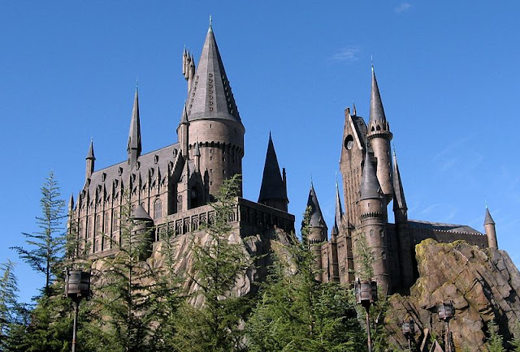
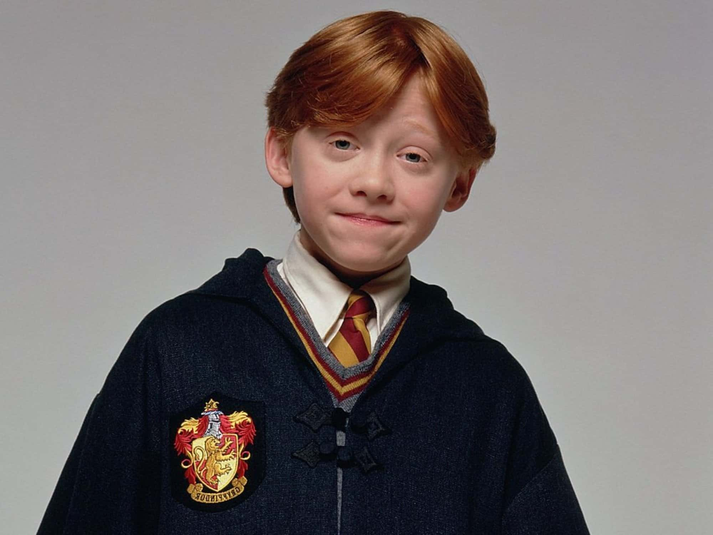
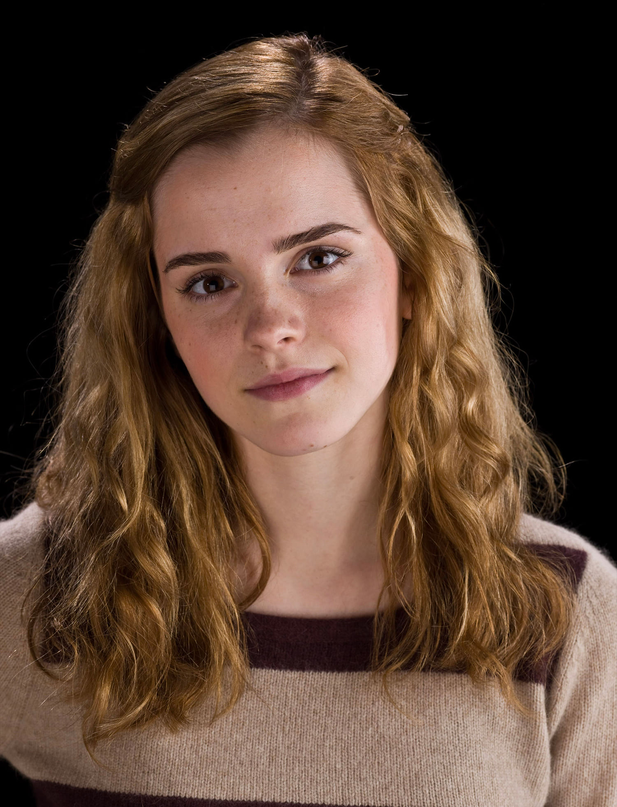
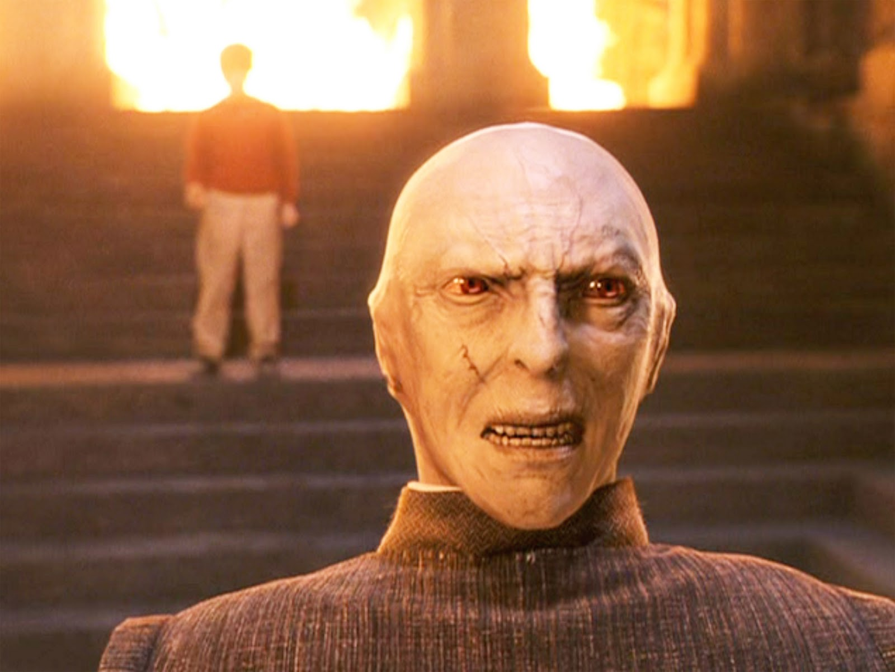

Harry Potter merupakan film tentang dunia sihir yang dicintai seluruh dunia dari berbagai usia.
Namun, masih banyak orang yang belum nonton film ini dan tidak tau urutan film Harry Potter secara kronologis.
Para Potterhead, penggemar serial film Harry Potter, pasti meyakini bahwa film Harry Potter merupakan film terbaik sepanjang masa.
Film ini diadaptasi dari novel fiksi oleh penulis J. K. Rowling,yang menceritakan petualangan seorang penyihir
muda bernama Harry dan teman-temannya di sekolah Hogwarts.

Asrama Hogwarts adalah asrama yang digunakan para murid di sekolah sihir Hogwarts sebagai tempat tinggal selama belajar di Hogwarts, pembagian asrama ini berdasarkan seleksi yang dilakukan oleh topi seleksi. Di seri Harry Potter, Sekolah Sihir Hogwarts terbagi menjadi empat asrama, masing-masing menggunakan nama keluarga pendirinya Godric Gryffindor, Salazar Slytherin, Rowena Ravenclaw dan Helga Hufflepuff. Asrama-asrama tersebut saling bersaing selama mereka bersekolah, dengan menambah atau mengurangi angka dari berbagai peristiwa, untuk memperoleh Piala Asrama. Masing-masing memiliki tim Quidditch tersendiri yang bersaing dalam memperebutkan Piala Quidditch. Kompetisi dan rivalitas yang paling sering terjadi (dan yang paling seru) antara Asrama Gryffindor dan Slytherin, yang bahkan dalam cerita cenderung mengarah ke permusuhan. Asrama di Hogwarts merupakan tempat tinggal dan belajar untuk setiap muridnya.
Harry Potter
Harry Potter (Daniel Radcliffe)
Pemain Harry Potter
biografiku.com
Daniel Radcliffe menjadi pemeran utama dalam film Harry Potter dengan nama yang sama. Daniel Radcliffe sendiri lahir pada tanggal 23 Juli 1989 di daerah London Barat, Inggris. Ia merupakan anak dari pasangan Alan George Radcliffe (ayahnya) dan Marcia Jeannine (ibunya).
Sudah sejak kecil Daniel Radcliffe ingin tampil di panggung pertunjukkan, tetapi kedua orang tuanya mengatakan kepadanya jika dunia pertunjukkan bukanlah tempat Daniel. Meski begitu, akhirnya Daniel Radcliffe diperbolehkan untuk mengikuti audisi oleh orang tuanya.
Hingga pada akhirnya, Daniel Radcliffe berhasil lolos dan mendapatkan penampilan pertamanya di layar lebar sekitar tahun 1999. Ketika itu ia berperan sebagai David Copperfield. Baru sekitar tahun 2001 ia menjalankan sebagai pemain film pertamanya yaitu sebagai Mark Pendel dalam film Tailor of Panama.
Di tahun yang sama Daniel Radcliffe berhasil mendapatkan peran dalam film Harry Potter and the Sorcerer’s Stone dan terus berlanjut hingga ke seri terakhir film Harry Potter.
Harry James Potter atau biasa dikenal dengan nama Harry Potter adalah karakter utama dalam novel maupun film Harry Potter. Harry Potter sendiri adalah seorang penyihir unik, hal ini tak lain karena darah campuran yang dimilikinya serta menjadi orang yang selamat dari serangan Voldemort. Adanya hal tersebut, Harry Potter kerap mendapatkan julukan sebagai The Boy Who Lived.
Orang tua Harry yaitu James dan Lily Potter terbunuh atas insiden serangan Voldemort hingga menyisakan Harry seorang diri. Saat ini Harry masih dalam umur belia dan setelah kejadian tersebut Harry dititipkan kepada keluarganya dari kalangan Muggle atau manusia biasa.
Selama tinggal bersama dengan keluarganya, Harry Potter selalu ditindas oleh mereka, baik itu bibi, paman hingga saudaranya sekalipun selalu memberikan perlakuan yang sama.
Setelah umur 11 tahun tepatnya, Harry Potter akhirnya mengetahui jika dirinya merupakan seorang penyihir. Singkat cerita Harry berhasil sekolah di Sekolah Sihir Hogwarts. Melalui hasil seleksi, Harry Potter masuk ke dalam asrama Gryffindor dan berhasil bertemu dengan sahabat terbaiknya yaitu Ron Weasley dan Hermione Granger.
Ron Weasley

Ron adalah putra dari pasangan Arthur Weasley dan Molly Weasley, yang merupakan keturunan keluarga penyihir berdarah murni. Ron adalah anak keenam dari tujuh bersaudara. Ron dibesarkan di The Burrow, dekat desa Ottery St. Catchpole di Devon. Ron memiliki 5 kakak laki-laki, Bill, Charlie, Percy, Fred dan George, serta satu adik perempuan, Ginny. Ron sangat protektif terhadap adik bungsunya itu.
Sebagian besar kawannya di Gryffindor memanggilnya Ron, kecuali Luna Lovegood dari Ravenclaw yang memanggilnya Ronald dan Lavender Brown yang memanggilnya Won-Won ketika mereka berpacaran. Fred dan George memanggilnya Ickle Ronniekins di buku pertama. Draco Malfoy dan kawan-kawan Slytherinnya biasanya memanggil nama belakangnya. Dobby si peri-rumah pernah menyebutnya Wheezy.
Di awal seri, ayah Ron bekerja sebagai kepala Departemen Penyalahgunaan Barang-Barang Muggle, sebuah divisi kecil di Kementerian Sihir. Ron kerapkali diolok-olok (oleh (Draco) Malfoy, (Gregory) Goyle, dan (Vincent) Crabbe) tentang kemiskinan keluarganya dan ini sering kali membuatnya kesal dan frustasi. Meski tidak memiliki banyak uang, Artur dan Molly membesarkan anak-anaknya dengan cinta dan norma yang baik. Biarpun kakak-kakaknya – terutama si kembar – kerapkali mengolok-olok Ron, mereka juga sangat protektif terhadapnya (termasuk Percy yang menyebalkan). Sebenarnya, Ron beruntung dibesarkan di sebuah keluarga besar yang memiliki ikatan kekeluargaan yang erat, tetapi dia sering tidak menyadarinya. Ia kebalikan dari Harry, yang kaya (setidaknya di dunia sihir), tetapi hidup dengan paman dan bibi yang tidak menyayanginya. Harry sendiri mengakui bahwa The Burrow adalah tempat kedua yang paling disenanginya (setelah Hogwarts) dan dia selalu senang untuk kembali ke rumah keluarga Weasley yang ceria dan hangat.
Kepribadian dan Skill
Hermione Granger

Hermione Jean Granger adalah tokoh fiksi karangan J.K. Rowling dalam seri Harry Potter. Karakternya dalam film diperankan oleh Emma Watson.
Hermione termasuk seorang murid yang terpilih di asrama Gryffindor di Sekolah Sihir Hogwarts dan merupakan sahabat terbaik Harry Potter dan Ron Weasley. Ia lahir pada tanggal 19 September 1979 yang membuat Hermione menjadi siswa tertua di antara teman sekelasnya. Hal ini terjadi karena Hogwarts hanya menerima siswa yang sudah berusia sebelas tahun pada saat masuk pada tahun ajaran pertama sekolah tersebut pada 1 September, dan Hermione terlalu muda untuk bergabung dengan kelas terdahulu.
Hermione menunjukkan kemampuan akademis yang lebih bila dibandingkan dengan sahabat dan teman sekelasnya walaupun ia kurang memiliki kematangan emosional. Ia selalu bereaksi negatif pada Ron yang selalu menggodanya, tidak tahan bila dipermalukan atau ketika teman-temannya berbuat hal yang konyol, dan biasanya melemparkan tubuhnya ke tempat tidur bila merasa kecewa.
Voldemort

Lord Voldemort adalah seorang tokoh ciptaan JK Rowling dalam novel Harry Potter. Voldemort digambarkan sebagai tokoh yang sangat jahat, kejam, licik, menghalalkan segala cara untuk mencapai tujuannya. Terlahir dengan nama Tom Marvolo Riddle, Voldemort dikenal sebagai salah satu siswa Hogwarts yang paling cemerlang di masanya. Tidak heran, ia sangat hebat dalam sihir dan ditakuti oleh nyaris seluruh penyihir hingga titik di mana rakyat sihir takut untuk menyebut namanya. Sehingga, Voldemort kerap disebut sebagai "Kau-Tahu-Siapa", "Pangeran Kegelapan", atau "Dia Yang Namanya Tak Boleh Disebut". Pada Harry Potter dan Relikui Kematian, radio pemberontak "Pantauan Potter" (Potterwatch), menyebutnya sebagai "Pemimpin Pelahap Maut".
Kata Voldemort sendiri berasal dari anagram nama "Tom Marvolo Riddle" yaitu "I Am Lord Voldemort". Cerita perubahan Voldemort dari Tom Marvolo Riddle menjadi Lord Voldemort merupakan sebuah kisah psikologis menarik dari JK Rowling. Tom Marvolo Riddle (Voldemort) dilahirkan pada tanggal 31 Desember 1926 di sebuah panti asuhan di London.